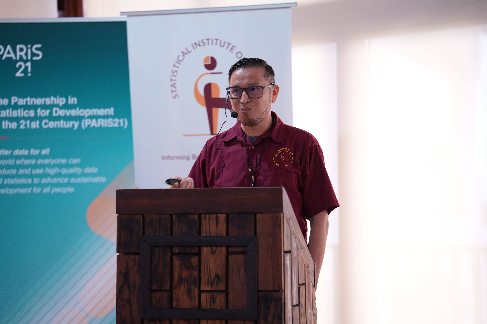

About
I am a geoinformatics specialist, geospatial data professional and postgraduate student pursuing a Master of Science in Geographical Information Science & Systems at the Universität Salzburg.
I am a Geographic Information Systems Assistant at the Statistical Institute of Belize, managing geospatial data from censuses and surveys, and a Geoinformatics Specialist supporting Fragments of Hope coral conservation initiatives.
I am looking to collaborate on spatial projects.
Tech stack
Research Interest
- Spatial Disaggregation
- Earth Observation & Remote Sensing
Projects
Repositories from github.com/Rubi3r3